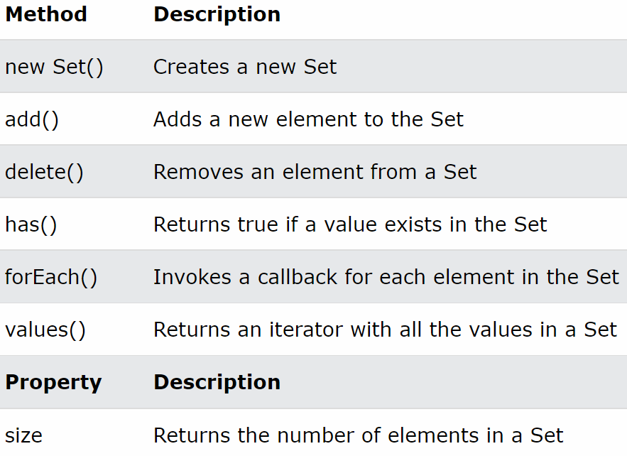

자바스크립트에 데이터타입의 확장개면으로 집합데이터를 다룰수있는 객체를만듬
- set안에 중복데이터는 허용하지않음, 단 중복검사 후 존재하는 데이터는 최초의 데이터만 저장함
- Set() : 객체로 개념화 후 자바스크립트 내부에 클래스를 정의하고 그 클래스를 코드로 인스턴스화 할수있게만든 구현체
- 파라미터 : 배열을 주로 사용한다, 배열의 인덱스와 값을 활용하여 집합데이터를 만든다고 생각하면됨
- 배열과 비슷하지만 set의 전용 메서드들이 존재하기 때문에 별도록 학습을 해두어야함

- new Set() or new Set(배열) : Set객체생성 및 초기화
- set => s : s.add(데이터) : 값 추가
- s.delete(데이터) : 값 삭제
- s.has(데이터) : 값 존재여부
- s.forEach(callback function) : Set 순환
- s.entries(), s.keys(), s.values() : Set의 키:값, 키, 값을 추출, 리턴타입은 SetIterator, 별도의 메서드를 사용하여 SetIterator에 접근해야함
- s.size() : Set이 갖고있는 데이터의 개수
- Set은 getter를 제공하지 않으므로 forEach를 사용하여 개별값에 접근해야함